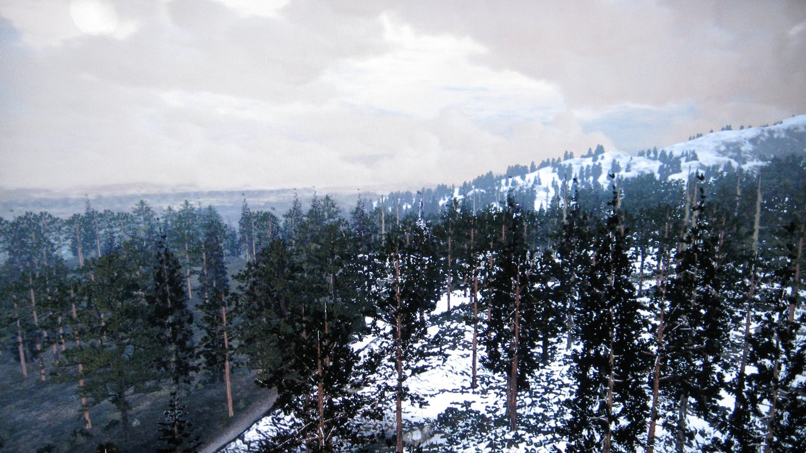
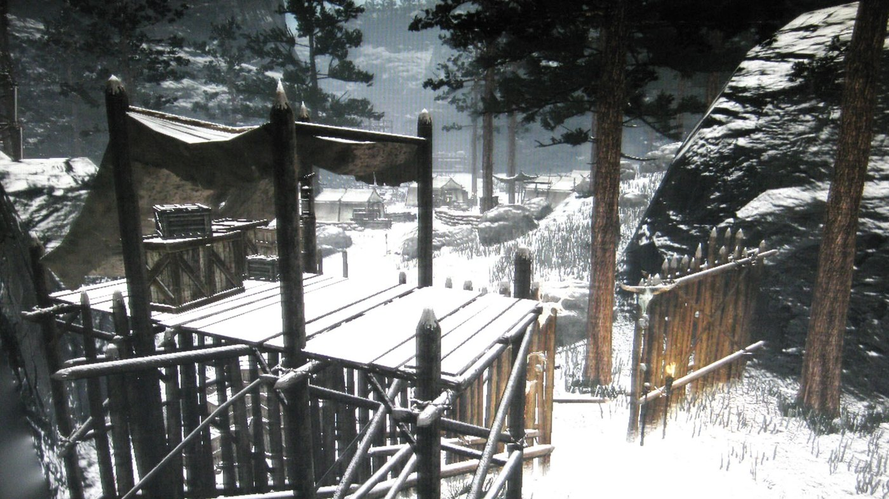
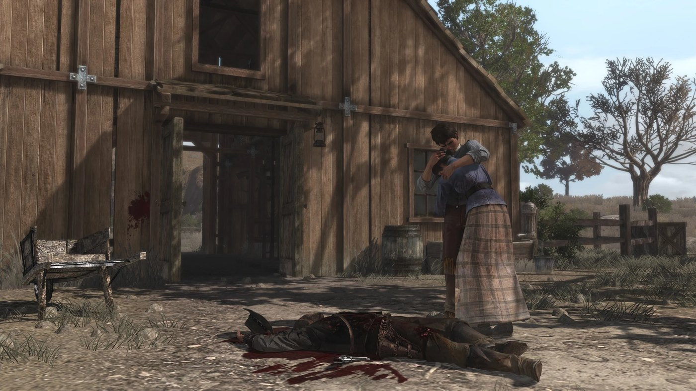
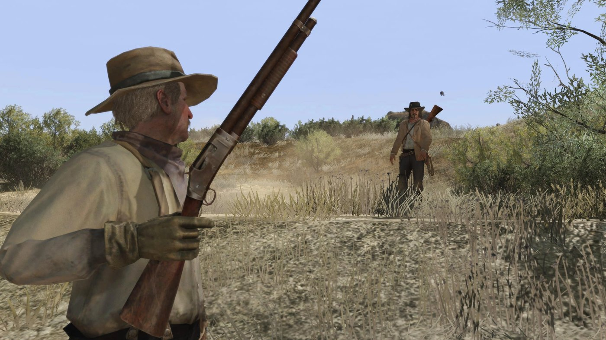

Guide de l'histoire · Red Dead Redemption Acte III : West Elizabeth Red Dead Redemption Acte 3 sur 3 West Elizabeth 1911 à 1914 Par Joseph Lambert · Mis à jour le 9 septembre 2026  Tall Trees, la forêt du nord de West Elizabeth où Dutch van der Linde se cache. John Marston rentre du Mexique à la fin de l'acte 2 avec un seul nom à rayer : Dutch van der Linde. Le troisième acte couvre West Elizabeth, la traque dans Tall Trees, le retour de John auprès des siens et le sort que le gouvernement lui réserve. Spoilers complets sur l'acte 3 et la fin de Red Dead Redemption. Le cadre : West Elizabeth West Elizabeth est la troisième région du jeu, et la plus moderne. Blackwater est une ville dotée de l'éclairage électrique, d'automobiles et d'une salle de cinéma ; c'est là que Edgar Ross et Archer Fordham dirigent leurs opérations. Tall Trees, au nord-ouest, est une forêt primaire, dernier espace non colonisé de la carte. Beecher's Hope, le ranch de John, se trouve à l'est. Retrouver Dutch Ross confie John au professeur Harold MacDougal, un anthropologue installé à Blackwater, et à Nastas, un guide amérindien qui travaille avec lui. Dutch a réuni un nouveau gang à Tall Trees, composé pour l'essentiel d'Amérindiens chassés de leurs terres, et attaque banques et diligences depuis un repaire situé à Cochinay. La recherche de ce repaire occupe une série de missions avec MacDougal et Nastas, au cours desquelles Nastas est tué dans une embuscade.  Cochinay, le camp fortifié que Dutch occupe à Tall Trees. Cochinay et la mort de Dutch John mène l'assaut de l'armée sur Cochinay. Il traverse le camp au combat et accule Dutch au bord d'une falaise. Dutch lui répond que sa mort ne changera rien, parce que le gouvernement se trouvera simplement un autre monstre à traquer. Il recule alors dans le vide et se tue dans la chute. Ross arrive quelques instants plus tard. La liste est close, et John est libéré. Beecher's Hope John rentre à Beecher's Hope, où l'attendent Abigail, Jack et Uncle. Cette partie du jeu ne comporte pratiquement aucune fusillade : John répare le ranch, mène le bétail, dresse un cheval, chasse les corbeaux du champ de maïs et apprend à Jack à chasser.  Beecher's Hope, 1911 : John est abattu par les soldats devant sa propre grange. La mort de John Marston L'armée et le Bureau encerclent le ranch. Uncle est tué dès les premiers coups de feu. John met Abigail et Jack en selle et les fait fuir, puis reste sur place et sort de la grange pour affronter seul les soldats. Il est abattu dans la cour. Ross figure parmi les hommes qui se tiennent au-dessus du corps. John est enterré sur la colline qui domine le ranch.  1914 : Jack Marston retrouve Edgar Ross, à la retraite, et le provoque en duel. Épilogue : Jack Marston, 1914 Le jeu fait un bond de trois ans. Jack Marston est devenu adulte, Abigail est morte, et il l'enterre auprès de son père sur la colline. Il part ensuite à la recherche d'Edgar Ross. Il interroge la femme de Ross à Blackwater, puis son frère à Thieves' Landing, qui lui apprennent que Ross a pris sa retraite et passe son temps à chasser au bord de la rivière. Jack l'y retrouve, le provoque et le tue en duel. Le jeu s'achève sur ce duel. Personnages clés L'acte 3 referme l'histoire de John Marston et confie le jeu à Jack Marston. Dutch van der Linde est la dernière cible. Edgar Ross est l'homme qui a fixé les conditions et ne les respecte pas. Abigail Marston et Uncle sont à Beecher's Hope, tandis que le professeur Harold MacDougal et Nastas mènent les recherches dans Tall Trees. Les événements clés de l'acte 3 John travaille avec le professeur Harold MacDougal et Nastas, à Blackwater, pour localiser Dutch van der Linde. Nastas est tué au cours des recherches. John mène l'assaut sur Cochinay ; Dutch se jette de la falaise plutôt que d'être pris. John est libéré et rentre à Beecher's Hope, où il exploite le ranch avec Abigail, Jack et Uncle. L'armée et le Bureau attaquent le ranch. Uncle est tué, Abigail et Jack s'enfuient, et John est abattu devant la grange en 1911. Trois ans plus tard, Abigail meurt et Jack l'enterre auprès de John. Jack retrouve Edgar Ross et le tue en duel en 1914, ce qui clôt le jeu. PrécédentActe II : Nuevo Paraíso Guide de l'histoireTous les chapitres